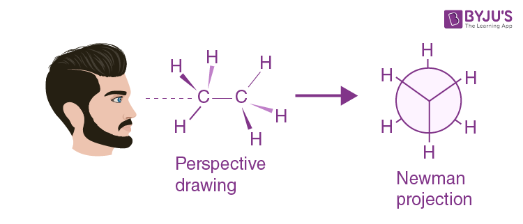

Organic Molcules
Organic molecules are molecules consist of carbons chains bonded with functional group.
Functional groups contribute to the properties of organic molecules.
Isomers
Isomers are chemical compounds that share the same chemical formula but different molecules or arrangements.
There are two main types of isomers:
-
Constitutional Isomers: isomers with different connectivity
-
Stereoisomers: isomers with same connectivity but different arrangement in space
Stereoisomers can be divided into 2 subgroups:
-
Conformational isomers: isomers differ by rotation along a single bond

-
Enantiomers: isomers with the same connectivity, that are mirror images of each other but that are not identical to each other
Newman Projection
Conformational isomers differ by rotation along a single bond. Newman Projection shows a perspective of looking down that bond. In Newman Projection the the dot in the center represent the carbon in the front and the circle around the dot represent the carbon in the back.
There are two type of interaction: staggered interations and eclipsed interaction
Torsional Strain and Gauche Interations
Torsional strain involve exlipsing interactions and destabilize the molecule. The energy cost for eclipsing interactions between larger group is larger.
In C2H6, each H-H eclipsing interaction is about 1 kcal/mol. In Propane, the total energy cost is 3.3 kcal/mol.
Gauche interactions involve destabilizing interactions that occur in the staggered conformation because the size of substituents is too big that it can destabilize the molecule.